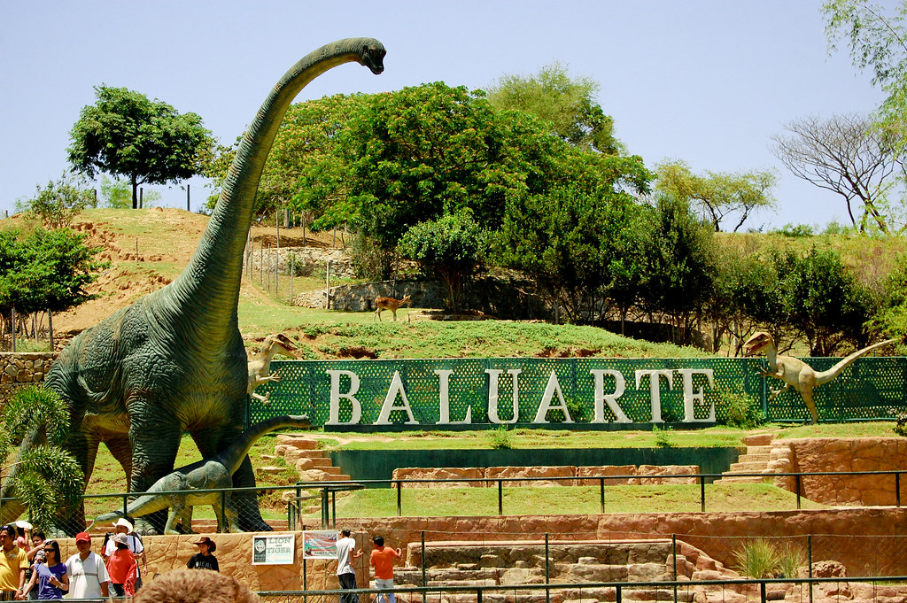

Tourist Spots and Adventures
1. Aw-Asen Falls
Tallest Falls on Ilocos Region. Fresh Water that you can even drink. Located at Barangay Santo Rosario in Sigay town.
2. Santiago Cove
Dubbed “Boracay of the North” for its fine sand and clear water. Its clean and refreshing for summer. Located at Santiago Ilocos Sur.
3. Baluarte Zoo
Baluarte Zoo is a wildlife sanctuary and mini-zoo owned by a local politician. It features exotic animals and interactive shows. A fun and educational experience for families and animal lovers.
4. Suso Beach
White sand beach with stunning sunsets. Has a great view and good for sunset. Perfect for photographer.
Authentic Ilocos Sur Products
Discover the finest local products crafted by skilled artisans. From handwoven fabrics to delicious delicacies, support local businesses and bring home a piece of Ilocos Sur.
Locale Products
Tapuey
A traditional rice wine from the highlands of Ilocos, often served during festivals and celebrations.
₱250
Vigan Longganisa
The famous garlicky, tangy sausage of Vigan, usually served with vinegar and rice.
₱190
Abel Iloco
A handwoven traditional textile made from cotton, showcasing intricate Ilocano patterns and craftsmanship.
₱350
Sukang Ilocano
A strong, naturally fermented vinegar made from sugarcane, widely used in Ilocano cooking.
₱120
Bagnet
A crispy deep-fried pork belly delicacy, crunchy on the outside yet tender inside, a must-try Ilocano dish.
₱250
Royal Bibingka
A chewy rice cake topped with cheese and margarine, uniquely found in Ilocos Sur.
₱120
Okoy
Crispy shrimp fritters mixed with vegetables and batter, commonly eaten as street food or snacks.
₱200
Basi Wine
A traditional Ilocano wine made from fermented sugarcane, enjoyed for its mildly sweet and tangy taste.
₱300
Kalamay
A sticky rice delicacy made with glutinous rice, coconut milk, and sugar, often sold in coconut shells.
₱100
Burnay Jar
Large earthenware jars made from clay, traditionally used for storing water, vinegar, or basi wine.
₱650
Bamboo Basket
Locally crafted baskets made from bamboo, used for storage, farming, or as eco-friendly souvenirs.
₱400
Tinubong
A sweet sticky rice cake cooked inside young bamboo tubes, giving it a unique smoky aroma and flavor.
₱100